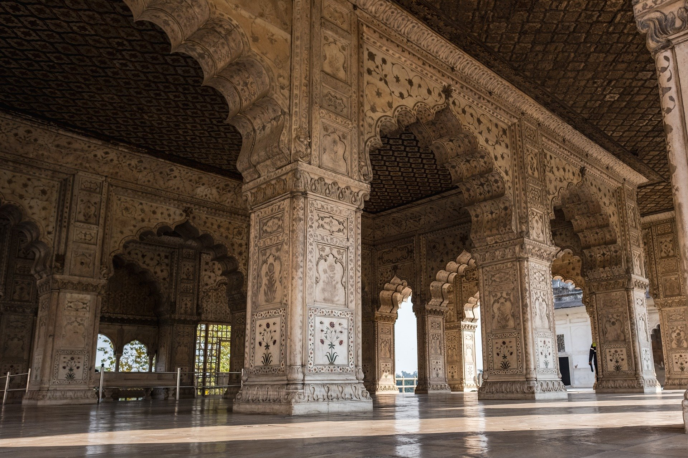

The best part about living in a city like Delhi is that you have in numerous of choice when it comes to planning a short weekend getaway. From peaceful hill-stations to plains grounded in culture and heritage, Delhi offers an astonishing range of rejuvenating getaways to help you escape your daily urban chaos and get some peace or adventure, whatever you may desire, in your life. Here are some of the exciting weekend getaways from Delhi that we think will be able to satisfy your wanderlust.
1.Rishikesh
It is situated in the foothills of Himalayas, Rishikesh is the perfect place if you are looking for some adventure or just a spiritual layout. From camping, river rafting to bungee jumping Rishikesh haves it all. It has amazing cafes to be explored along the Ganges River and serene sunset to behold. You can always visit and enjoy Rishikesh throughout the year as it is just at a drive of 6 hrs from Delhi.
2.Agra
known for the place where love broths, where the most beautiful symbol of love is located that is TAJ MAHAL. Being one of the oldest cities of the country and former capital of Mughal Empire, Agra exudes historic old-world charm and is dotted by several landmarks and monuments from the bygone era, still echoing the tales of past. Agra has many Forts to be explored and is an amazing place to try authentic Mughal dishes to the very core. The best time to visit Agra is between the months of October to March. It is merely 4-5 five hours drive from Delhi hence proving a good weekend getaway.
3.Jaipur
The PINK CITY of India, rich in culture, Jaipur is one of the prettiest places in India. Rich in Rajasthani culture and blessed with a rich Heritage and Culture left behind by the rulers of the place. It definitely is a place calling to be explored and lived. There are several Forts and museums to be cherished. To live the experience of Rajasthani culture, there is a mock village known as Chaukidhani. The best time to visit Jaipur is between the months of November to March. Also being just a drive of 5-6 hours from Delhi makes it a good choice for your weekend.
Nainital is a hill station nestled in the Kumaon Hills and it boasts the unique, eye-shaped Naini Lake. It is also famously called the ‘City of Lakes’. This beautiful town also offers a tranquil break from your monotonous routine. Nainital offers a range of activities for you to explore for an adventurous streak, ranging from several hiking trails and trekking points. Some of the popular hiking trails are the Nainital- Betalghat Trek, Nainital- Kilbury Trek and Snow View Trek.

Mussoorie, situated in the foothills of the Himalayas is famously known as the "Ruler of Hills". It is without a doubt one of the best slope stations present in the nation and is also located at a comfortable distance from Delhi hence provides a perfect weekend getaway for all the travellers. This pictorial sloping retreat is known for its mystical magnificence, appealing appeal and salubrious nature and is also home to some staggering waterfalls. Mussoorie rightly is a hub for nature-loving, honeymoon couples, adventure-seeking or heat escaping tourists and is also known for its excellent educational institution. Mussoorie also offers to encompass perspectives of the Shivalik Ranges and the Doon Valley.
Shimla is located at an altitude close to 2400 meters and is set majestically in the Himalayas. The city, built on top of seven hills was the summer capital of British India and is spread across a ridge and its seven spurs. Shimla plays the role of India's tourism hub and attracts thousands of tourists from across the world every season. It is also home to many notable Indians and viceroys of British India, Shimla is the first destination on anybody's lips when thinking about a cool weekend getaway. Well known for its rich flora and fauna, gourmet restaurants and scenic delights and is also popular for honeymoons and sports. Also good news this hill station is active all year round.
Mcleodganj is a hill station near Dharamshala and is one of the most popular sites among trekkers. Its culture has a beautiful blend of Tibetan with some British influence. This place is also famous for being home to the Tibetan spiritual leader Dalai Lama. This town is culturally blessed by a prominent Tibetan influence owing to the major settlement of Tibetans here which is due to the fact that it is home to Dalai Lama. Mcleodganj has one of the most mesmerising landscapes nestled among the hills, in the entire state of Himachal Pradesh and attracts a lot of tourists throughout the year. Few of the most eminent and religiously significant monasteries in India are located here also tourists must visit the scenic Dal Lake and Triund, which are apt for quiet picnics with your loved ones.
You seriously were thinking that we would miss Dehradun when talking about the best weekend getaways from Delhi. Dehradun is rightly the best weekend getaway from Delhi because of its location and because it is nestled beautifully in the Doon Valley in the foothills of Himalayas. This place is also known as the abode of Drona. The thing that makes it beautiful is that it is bestowed with enduring rivers, undulating streams, mountains, valleys, and vivid landscapes. It also offers various adventurous activities like paragliding, skiing, river rafting, trekking and angling. This all makes a Dehradun a great option. It also acts as a gateway to various other nearby hill stations. The various other places to visit here are the Clock Tower, Chetwode Hall, Chandrabani Temple, Tapovan, Tibetan Temple, Tapkeshwar Temple, and Malsi Deer Park.
We hope that we could provide you with excellent choices to act as your getaway this coming weekend. Hope you enjoy your trip.
Wanna reach out to us?